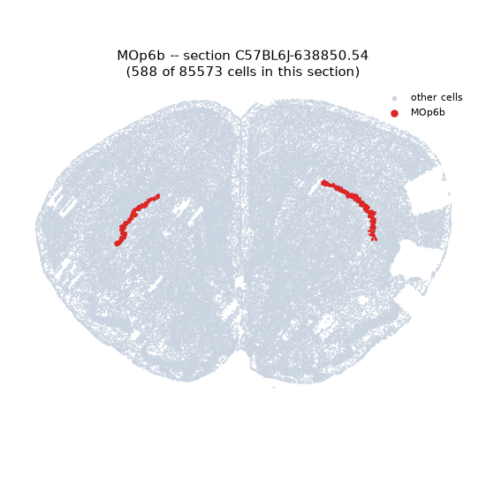
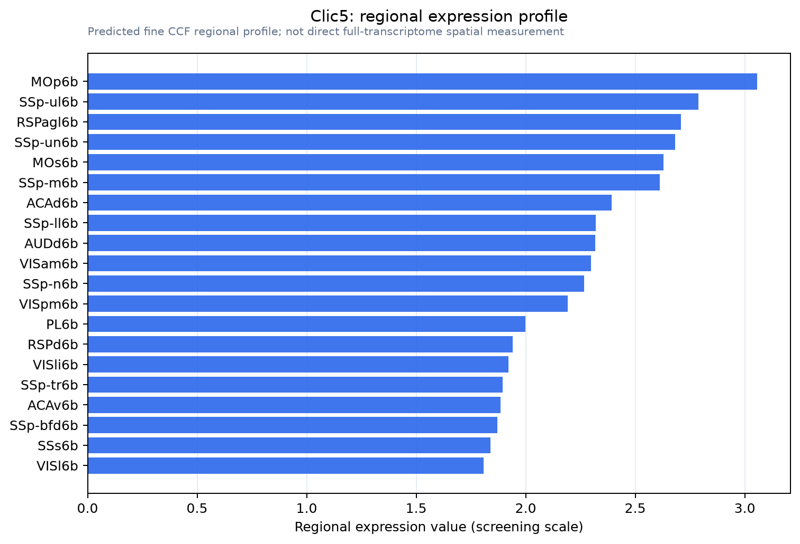

Clic5
Chloride intracellular channel protein 5 (Glutaredoxin-like oxidoreductase CLIC5) (EC 1.8.-.-)
Spatial tier: REGION_BIASED · Class: ION_CHANNEL · Top region: MOp6b (Primary motor area, Layer 6b) · Positive regions: 31/554
45.5Discovery Score
41.2Targetability Score
CEvidence grade C
What this means: Clic5: fine CCF profile is region-biased toward MOp6b (top regions: MOp6b, SSp-ul6b, RSPagl6b, SSp-un6b, MOs6b); this is a discovery lead, not direct proof.
Direct spatial evidence
MERFISH REGION LOCATOR

Regional expression figure

Predicted WMB × fine-CCF profile; not direct full-transcriptome spatial measurement.
Spatial profile
Evidence and specificity
- Evidence status
- PREDICTED_FINE
- Direct sources
- None; predicted localization only
- Exclusive threshold
- 12 positive regions out of 554
- Spatial specificity
- 0.321
- Top-region fraction
- 0.043
- Filter status
- PASS
Interpretation limits
- Cell-type-to-region projection is imputed expression, not direct spatial measurement.
- Adult reference atlases do not establish stability across age, sex, strain, state, or disease.
- Transcript abundance does not guarantee protein abundance or genetic-tool performance.